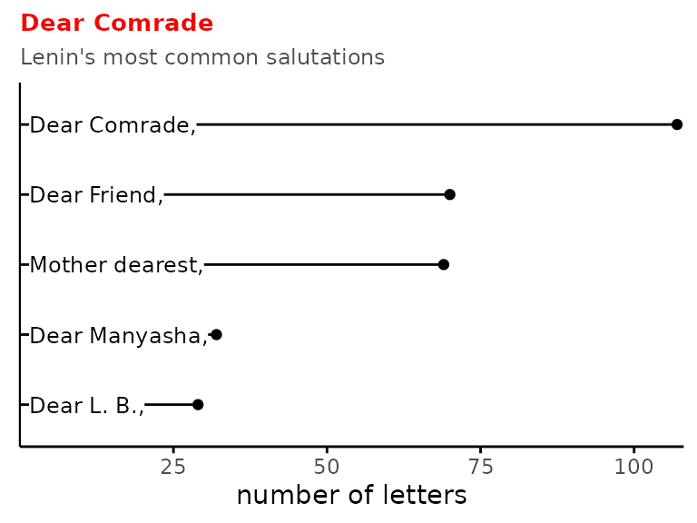
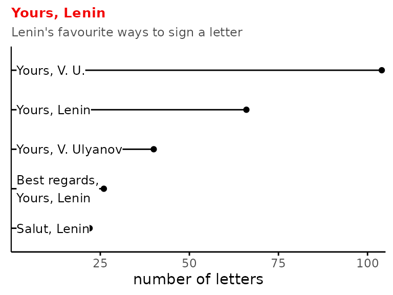

leninature
leninature.Rmd The Marxists Internet Archive has an extensive collection of Lenin’s works, ranging from books like What Is To Be Done? to notes scribbled on printed documents. This package makes these works available in a (mostly) tidy data frame,
The Marxists Internet Archive has an extensive collection of Lenin’s works, ranging from books like What Is To Be Done? to notes scribbled on printed documents. This package makes these works available in a (mostly) tidy data frame, lenin.
The works span from 1893 to 1923 (Lenin died in early 1924), although the majority of his writing is from the founding of the Bolshevik party (1903) and on-wards. Perhaps unsurprisingly, the year of the February and October Revolutions were marked by a particular flurry of writing.
Here are a couple of fun and quick peeks into the data. You can view the code that went into making these graphs and tables here. You can also read additional documentation about this data set in ?lenin.
Books
Lenin’s longest work is “Materialism and Empirio-Criticism”, a philosophical text arguing against Mach and other idealists who claim the world had no objective real existence outside human perception. It’s over three times as long as his perhaps more famous “The State and Revolution”, in which he argues for the need to remove the old institutions of the bourgeois state through revolution in order to bring about a social structure without class.
| year | title | number of words |
|---|---|---|
| 1908 | Materialism and Empirio-Criticism | 127963 |
| 1904 | One Step Forward, Two Steps Back | 86558 |
| 1901 | What is to be Done? | 71679 |
| 1907 | The Agrarian Programme of Social-Democracy in the First Russian Revolution, 1905-1907 | 68026 |
| 1894 | What the “friends of the People” are and How They Fight the Social-Democrats | 64170 |
| 1894 | The Economic Content of Narodism and the Criticism of it in Mr. Struve’s Book | 59421 |
| 1905 | Two Tactics of Social-Democracy in the Democratic Revolution | 45803 |
| 1897 | a Characterisation of Economic Romanticism | 41846 |
| 1920 | ‘Left-Wing’ Communism: an Infantile Disorder | 38917 |
| 1917 | The State and Revolution | 38681 |
Letters
The Marxists Internet Archive’s collection also includes an extensive number of letters from Lenin to friends and colleagues. His most frequent correspondents included his mother and early Bolsheviks Zinoviev, Kamenev, Gorbunov, and Armand.
The most common way Lenin started his letters was with the salutation “Dear Comrade.” The most common way he ended his letters was with the close “Yours, V.U.”
 It’s interesting that “Salut, Lenin” made it into the top 5. Russia and France had close political ties, and in the 18th and 19th century it was fashionable for the nobility to converse in French. The class-based language barriers and trendy use of French feature in Tolstoy’s Anna Karenina and Chernychevsky’s What is to be Done?. Stalin also discusses it in his essay on linguistics:
There was a time when Russian aristocrats at the tsar’s court and in high society also made a fad of the French language. They prided themselves on the fact that when they spoke Russian they often lapsed into French, that they could only speak Russian with a French accent. Does this mean that there was no Russian language common to the whole people at that time in Russia, that a language common to the whole people was a fiction, and “class languages” a reality?